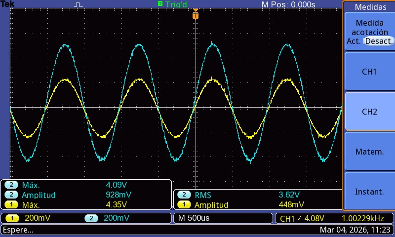

Prueba en Osciloscopio
Validación práctica del OP-AMP implementado.

Medición de Ganancia
Conclusión
Todas las especificaciones fueron cumplidas satisfactoriamente. El OP-AMP implementado funciona como se esperaba en las simulaciones teóricas.